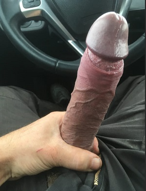
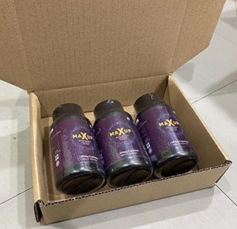

14.11.2020

Penemuan Pembesaran Rahsia Akan Meningkatkan Saiz Zakar Anda + 5.5 CM SEMINGGU
Pembaca yang dihormati,
Akhirnya! Kami boleh berkongsi ini dengan anda...
Selama 2 bulan yang lepas, kami telah menyedari rahsia ini dan kami teringin sangat untuk memberitahu anda mengenainya.
Jika anda sudah lama menjadi pembaca kami, anda tahu bahawa kami sering berkongsi pendedahan tentang penyembuhan dan rawatan semula jadi - yang telah dibuktikan keberkesanannya oleh sains - tetapi, untuk satu sebab atau beberapa sebab yang lain, telah disorok oleh pihak-pihak tertentu.
Dan hari ini, kami akan berkongsi dengan anda cerita bagaimana suatu suplemen diet telah membantu lebih daripada 9000 lelaki untuk membesarkan kira-kira 7-8 CM dan meningkatkan stamina seks serta keyakinan mereka. Isteri dan teman wanita mereka telah memanggil penemuan ini "Rahsia Untuk Menjadi Bintang Lucah" disebabkan oleh pasangan mereka yang berubah menjadi lebih rakus secara seksual.
Disebabkan oleh dakwaan tersebut, kami memutuskan untuk menjalankan siasatan kami sendiri dan membuktikan keselamatan dan keberkesanan produk tersebut.
28 tahun / 25 tahun
Kami telah ber'couple' selama 3 tahun dan tinggal di Kuala Lumpur.
Kehidupan seks kami menjadi terhenti sedikit lebih setahun yang lepas dan kami sedar bahawa hubungan kami tidak akan bertahan lama jika ia berterusan seperti ini. Jadi kami mencari penyelesaiannya.
Panjang zakar saya adalah 15 CM panjang dan saya akan ejakulasi dalam masa 3 minit. Saya telah berbincang dengan pakar seks, pergi ke gym, mengambil pil yang dibeli di farmasi... malah mencuba alat pam yang saya terlihat di mana-mana tempat.. Tetapi tiada apa yang membantu.
Akhirnya, seorang rakan mencadangkan agar saya mencuba kapsul ini yang dia telah ambil tidak lama dulu. Saya buat kajian di Internet dan terjumpa testimoni yang menunjukkan gambar sebelum dan selepas yang begitu hebat. Mereka berkata yang mereka telah selamatkan hubungan mereka dengan menggunakan kapsul Maxup Caps. Saya sentiasa berasa sukar untuk mempercayai benda-benda sebegini, tetapi kali ini kami membuat keputusan untuk mencubanya, bukannya saya akan rugi apa-apa.
Ia tiba 2 hari kemudian dalam bungkusan yang dibalut dengan baik yang tidak diketahui oleh teman wanita saya.
Saya ikuti arahannya yang mudah itu, hanya ambil kapsul tersebut pada waktu pagi setiap hari dan selepas 2 minggu, saya terkejut dengan saiz baru saya yang tersangat besar dan tenaga yang kuat...
Teman wanita saya juga sedar perubahan itu apabila saya fuck dia.. rupa-rupanya, dia bukan sudah bosan dengan seks... dia cuma nakkan batang sekeras batu untuk ditunggang dan dipuja.
Sekarang, dia asyik nak lagi.
Dia bangunkan saya dengan "blowjob" hampir setiap hari, dan merayu-rayu agar saya fuck dia!
Jadi hasil saya sejak saya mula mengambil Maxup Caps, zakar saya lebih panjang 5.2 cm dan juga lebih tebal. Kini saya boleh bertahan selama 1 jam tanpa pancut dan akhirnya saya dapat memuaskan teman wanita saya. Ia baru sebulan setengah sejak saya mula melakukan rawatan itu tetapi saya sudah mempunyai saiz dan stamina yang meningkat...
AHLI & PAKAR SEKSOLOGI MENGESYORKAN MAXUP CAPS
PELBAGAI DOKTOR TELAH MENGESYORKAN MAXUP CAPS SEBAGAI REMEDI UNTUK MASALAH DISFUNGSI EREKTIL DAN MENINGKATKAN SIZE ZAKAR, SEBAB NO. #1 UNTUK KETIDAKPUASAN WANITA DALAM PERKAHWINAN DAN PERHUBUNGAN.
Dr. Steven Lau - PAKAR SEKS
Sebagai doktor, kami mengesyorkan Maxup Caps kepada lelaki yang ingin membesarkan zakar mereka dan/atau mengalami masalah ereksi.
Maxup Caps tidak melibatkan sebarang risiko yang dikaitkan dengan pembedahan, namun kesannya dalam memanjangkan dan melambatkan ejakulasi sangat memuaskan.
Semakin ramai golongan isteri atau teman wanita yang datang untuk berbincang dengan saya kerana mereka tidak berpuas hati dengan kehidupan seks mereka tetapi tidak mahu berpisah dengan suami mereka. Saya kemudiannya mengesyorkan Maxup Caps dan sudah menjadi kebiasaan untuk mereka kembali dengan suami mereka bagi mengucapkan terima kasih.
Maxup Caps meningkatkan saiz zakar sebanyak 3.1 hingga 4.2 CM secara puratanya dan saya sendiri melihat betapa suksesnya ia pada pesakit saya, mereka lebih yakin dan berasa puas.
Campuran 3 Herba Purba Mempunyai Kesan Yang Tidak dapat Dipercayai Pada Ereksi Anda
Kami bukannya bercakap tentang ubat baru yang aneh yang dihasilkan di dalam makmal (seperti Viagra).
Ini adalah tumbuh-tumbuhan yang telah digunakan selama beribu-ribu tahun, untuk banyak sebab yang berbeza. Penemuan terbesar di sini ialah Maxup Caps di mana ia menggabungkan semua ketiga-tiga bahan dan menemui kuasa luar biasa yang dimilikinya untuk ereksi anda.
Bahagian yang terbaik?
Tiada kesan sampingan yang tidak diingini!
Apa yang anda dapat ialah apa yang anda mahu... dan apa yang si dia perlukan!
Tahan lebih lama di ranjang dengan zakar yang berdenyut-denyut seperti ketika anda berumur 18 tahun dulu... dan jadilah lelaki yang anda tahu anda boleh jadi! Beraksilah dengan kuasa dan tenaga dengan meningkatkan aliran darah ke zakar anda secara selamat dan berkesan, lalu menghasilkan ereksi sekeras batu yang akan memuaskan wanita (atau ramai wanita) anda.
Nyalakan keghairahan tersembunyinya dan biarkan si dia memuja anda dengan cara yang sepatutnya.
LELAKI YANG MEMBESARKAN ZAKAR "SEAKAN-AKAN BINTANG LUCAH" YANG DISUKAI WANITA
Foto dan video yang ditunjukkan di blog ini telah dipaparkan dengan persetujuan orang-orang yang berkenaan. Adalah dilarang menggunakan foto mereka di laman web lain.
Salim S.
Saya dah guna Maxup Caps selama 3 bulan skrg ni. Sampai je hujung bln yg ke-2, zakar saya telah bertambah hingga 5.4 CM. Kini panjangnya 18.6 CM dan saya blh berasmara selama setengah jam tanpa pancut.
PERHATIAN
Hari ini anda boleh membeli Maxup Caps di Malaysia dengan diskaun 50%. Sayangnya, tawaran ini ditujukan hanya untuk pembaca kami!
LEBIH RAMAI PENGGUNA MAXUP CAPS
Najib: Saya tak menyesal lepas mencuba Maxup Caps, isteri saya sangat gembira dengan hasilnya dan hubungan seks kami bertahan 3x ganda lebih lama. Hubungan kami lebih bermakna dan saya telah temui keyakinan baru dalam diri saya.
Saya baru saja habiskan kotak ke-3 saya. Saya takkan teragak-agak untuk memesan lebih banyak lagi bila kotak ke-6 sudah habis digunakan, tetapi mereka kata yg kesannya masih akan kekal walaupun selepas berhenti rawatannya, jadi saya akan kembali untuk memberitahu anda jika ia benar
ZAKAR BINTANG LUCAH GERGASI!
MAXUP CAPS PENGGUNA DANIEL P. MEMBERIKAN TESTIMONI BELIAU
Saya bukannya mempunyai zakar yang kecil sangat, tetapi apabila seorang kawan memberitahu saya tentang Maxup Caps, saya nak mencubanya.
Keputusan: zakar saya dah menjadi besar! Tetapi yang paling penting, saya boleh berasmara berjam-jam lamanya! Apa lagi yang anda nak?
SEKARANG WANITA MENGEJAR SAYA TERIMA KASIH KEPADA SAIZ ZAKAR SAYA
PENGGUNA PENGGUNA DANIEL P. MEMBERIKAN TESTIMONI BELIAU

Saya seorang yang pemalu, masih teruna walaupun berusia 21 tahun. Saya tak kacak dan gadis-gadis tak nak pandang saya pun, jadi saya tak berani untuk bercakap dengan mereka. Sejak saya mengambil Maxup Caps, hidup saya telah berubah sepenuhnya.
Saya sedar yang penampilan itu tak begitu penting. Apa yang penting ialah saiz. Dalam masa 1 bulan, saya mendapat hasil pertama. Selepas tiga bulan, zakar saya menjadi sangat besar. Dan ia sememangnya disedari! Saya ingatkan gadis-gadis tak nampak benda-benda macam ni, pada akhirnya saya menyedari yang itu semua yang mereka fikirkan!
Semuanya bermula apabila saya dapat menghabiskan malam yang luar biasa dengan seorang gadis dari kelas Bahasa Inggeris saya. Kemudian segala-galanya meletup. Sama seperti lelaki suka bercakap tentang hubungan mereka, wanita juga suka bercakap tentang pengalaman seksual mereka antara satu sama lain. Kemudian semua gadis dari kolej saya mula bercakap-cakap tentang saiz zakar saya. Kini saya menikmati malam-malam yang sukar dilupakan. Jika seseorang telah memberitahu saya tentang ini beberapa bulan yang lalu, saya memang takkan percaya...